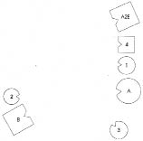
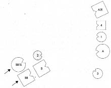
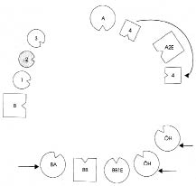
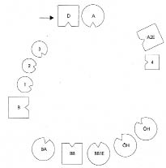
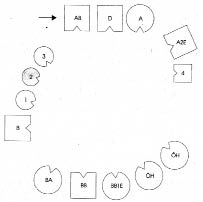
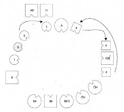
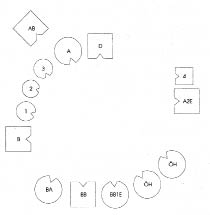

CLAUDIA Şimdi köken ailemi dizmek istiyorum.
HELLINGER Tamam. Kimler dahil ailene?
CLAUDIA Babam, annem ve üç kız. On iki yıl sonra buna annemin başka bir adamdan olan oğlu da eklendi. Sonradan annemle babam ayrıldı, annem yeniden evlendi. Sonra o adamdan da boşandı.
HELLINGER Annenle baban neden boşandı?
CLAUDIA Uzun zaman babamın alkolik olması nedeniyle olduğunu sandık. Gizlice çok içerdi. Ama aslında bundan önce kopmuştu aralarındaki bağ.
HELLINGER Ya hayatını kaybeden iki halan?
CLAUDIA Onlar babamın, büyükbabamın ilk eşinden olan üvey kardeşleri. Büyükbabamın ilk eşi altıncı ya da yedinci çocuğunda ölmüş.
Dizimde yer alacak temsilcileri seçerken küçük kız kardeşinin temsilcisine Sen Kanada’ya göç ettin.
HELLINGER Ona bu bilgiyi verdiğin için artık doğal olarak hissedemeyecek. Diyelim gitmek istediğini hissediyor; bunun kendiliğinden mi geldiğini yoksa sadece sen söylediğin için mi böyle hissettiğini bilemeyecek.
1. Resim

B Baba
A Anne
1 İlk çocuk, kız
2 İkinci çocuk, kız (=Claudia)
3 Üçüncü çocuk, kız
A2E Annenin ikinci eşi, 4’ün babası
4 Dördüncü çocuk, oğlan
HELLINGER Baba nasıl?
BABA Kızlarımı kollarıma almamak için kendimi zor tutuyorum. Bazı şeylerin düzensiz olduğunu hissediyorum. Kendimi sanki bir şey yapmış gibi hissediyorum. Baba ve kız gülerler.
HELLINGER Claudia’ya Baba nasıl bir duydu veriyor? Kiminle özdeşleşmiş?
CLAUDIA Babasıyla.
HELLINGER Kızını nasıl görüyor? –Büyükbabanın ilk karısı gibi. Baba ve kız, büyükbabanın ilk eşiyle ilişkisini yansıtıyor. Onun için bu iki kişiyi de dizime dahil edeceğiz.
2. Resim

BB Büyükbaba
BB1E Büyükbabanın ilk eşi
HELLINGER Baba şimdi nasıl?
BABA Nereden geldiğimi hissediyorum ama nereye gitmek istediğimi değil.
HELLINGER Bu daha mı iyi, daha mı kötü?
BABA Dörtte üç daha iyi.
HELLINGER Bu da bir şey. Kızla ilişkide değişen bir şey oldu mu?
BABA Çok az.
HELLINGER Claudia’nın temsilcisine İkinci kız nasıl?
İKİNCİ ÇOCUK Burada öncekine göre biraz daha iyiyim. Daha önce diğer köşe hiç ilgimi çekmiyordu. Ama buradan seve seve ayrılabilirim. Anneye zor çeviriyorum gözlerimi.
HELLINGER Anne nasıl?
ANNE Dizimde kocamı aldığında rahat bir nefes aldığımı fark ettim. En küçük kızım gittiğinde de Tanrıya şükür, ondan da kurtuldum diye geçti içimden. Onlardan hiçbiriyle temasım yok. Yalnızca en büyük kıza biraz kızgınlık duyuyorum, neden, bilmiyorum. Büyükbabayla onun ilk eşi geldiğinde kocam ve ortanca kızım benim için ağırlık kazandı. İlginç bir hale geldiler; daha çok da kız, adam pek o kadar değil.
HELLINGER Claudia’ya Annenin ailesinde ne olmuş?
CLAUDIA Erkek kardeşi ölmüş. Yalnızca altı haftalıkmış. Annem on yaşındayken babası savaşta ölmüş.
Hellinger resmi değiştirerek dizime annenin babası ve konsantrasyon kampında ölen iki halayı da ekler.
3. Resim

AA Anneanne
ÖH Bir Polonya konsantrasyon kampında ölen halalar
HELLINGER Baba şimdi nasıl?
BABA Çok daha iyi.
İLK ÇOCUK Babanın yanında durduğumdan bu yana artık ona sabitlenmiş değil dikkatim, daha az bağımlıyım.
İKİNCİ ÇOCUK Babanın ailesine mi baksam, gözümü mü çevirsem, karar veremiyorum. Daha önce bakışımı onlardan çevirmek çok güçlü bir istekti ama artık o yöne bakabiliyorum.
HELLINGER Bu nasıl çıktı ortaya?
İKİNCİ ÇOCUK Büyükbabanın ilk karısı görüş açıma girdiğinde.
BÜYÜKBABANIN İLK KARISI Ben bunu hissettim.
HELLINGER Tüm diğerleri arasında en önemli kişi o.
ÜÇÜNCÜ ÇOCUK Ben kendimi iyi hissediyorum.
ANNE Ben kendimi hiç iyi hissetmiyorum. Burada kötüyüm. Sol tarafımda hiçbir şey algılamıyorum.
DÖRDÜNCÜ ÇOCUK Annemin ilk kocasının karşısında dururken çok saldırgandım. Ama onun arkasına babası yerleştirildiğinde bu birden değişti. Şimdi annemin yanında ona karşı saldırganlaşıyorum. Burada çok rahatsızım.
HELLINGER Babanın diğer yanına geç. Orada nasıl?
DÖRDÜNCÜ ÇOCUK Hissedilir ölçüde iyileşti.
HELLINGER Anneye Sen şimdi nasılsın?
ANNE İyi değil.
HELLINGER Claudia’ya Anne gitmek istiyor. Hiç kendini öldürmeye kalkıştı mı?
Claudia ağlar.
HELLINGER Ölmek istedi mi?
CLAUDIA Bazen bunu yapacağını düşünüyorum.
HELLINGER Evet, gitmek istiyor. -Şimdi bir de onun ölen erkek kardeşini alalım.
Hellinger annenin ölen erkek kardeşini onun sağına yerleştirir.
4. Resim

D Dayı, çocukken ölmüş
ANNE Daha iyi.
DÖRDÜNCÜ ÇOCUK Benim için de.
HELLINGER Sen belki de onunla (dayı) özdeşleşmişsin.
Anneye Böyle iyi mi senin için?
ANNE Başımdan sırtıma yayılan bir titreme geçiriyorum. İyi, güzel böyle ama bir şekilde çok da soğuk.
Hellinger annenin savaşta ölen babasını da dizime alır.
5. Resim

AB Annenin babası, savaşta ölmüş
HELLINGER Dayı şimdi nasıl?
DAYI Babanın burada olması rahatlatıcı.
ANNE Ben kendimi ait hissediyorum.
HELLINGER Gruba Bende oluşan resim, annenin orada yeterli bir süre kalmasıyla şimdiki ailesine dönüp oradaki yerini alabileceği.
Hellinger annenin babası ve erkek kardeşini biraz geri çeker.
6. Resim

HELLINGER Anneye Şimdi nasılsın?
ANNE Daha iyi, çünkü erkek kardeşimle babam burada. Onlar geldiğinden beri rahatsızlık duymuyorum. Artık bakabiliyorum. Aynı anda kendimi tecrit edilmiş de hissediyorum. Sol tarafımda, ikinci kocam ve oğlumdan yana yolunda olmayan bir şeyler var.
İKİNCİ KOCA Onun beni aldattığını düşünüyorum. Yanımda birisi eksik.
Hellinger oğlu annenin yanına yerleştirir.
DÖRDÜNCÜ ÇOCUK Burada avuçlarım terliyor. Ona (ölen dayı) bakmak isterdim.
Hellinger oğlu babasının sağına yerleştirir.
DÖRDÜNCÜ ÇOCUK Burada daha iyi.
ÜÇÜNCÜ ÇOCUK Ben kendimi o kadar iyi hissetmiyorum.
HELLINGER Annenin yanına geç!
Gruba Bu kız, “Sen gideceğine ben gideyim anneciğim” diyor.
Claudia’ya “Yerine geç şimdi!”
Claudia dizimde kendi yerini aldığında İyi mi böyle?
Claudia duraksadığında Küçük kız kardeşinin yanına geç!
Claudia başını iki yana sallar.
HELLINGER Dene bir.
Claudia buna karşı çıkıp ağladığında Yanına geçsen nasıl olabileceğini hiçbir zaman öğrenemeyeceksin.
Claudia küçük kız kardeşinin yanına geçer.
CLAUDIA Anneye güvenmiyorum.
ANNE Onun için tasalanıyorum. Bana yaklaştığında ona sevgi duydum.
Claudia ağlar. Hellinger erkek kardeşini annenin soluna yerleştirir.
HELLINGER Claudia’ya Şimdi nasıl? Daha mı iyi?
Claudia başıyla onaylar.
İLK ÇOCUK Claudia’ya Kız kardeşim olarak yanıma geçtiğinde birden kendimi kötü hissettim, başım döndü.
HELLINGER İlk çocuğa Sen de kız kardeşlerinin yanına geç. Nasıl öyle?
İLK ÇOCUK Evet, böyle iyi.
BABA Artık ne yapmış olduğumu bilmek istiyorum.
HELLINGER Bu, senin babanın sorusu. Ve onun duygusu. Bunları ondan almışsın.
HELLINGER Kızların yanına geç.
BABA Böyle başımın çaresine bakabilirim.
7. Resim

İKİNCİ KOCA Omuzlarımda hafif bir gerilim var. Erkek kardeşi yanına yerleştirildiğinden beri karımın yanına gitmek istiyorum.
HELLINGER Onun varlığıyla karını başka bir ışık altında görüyorsun.
Claudia’ya Şimdi iyi mi?
Claudia güler ve başıyla onaylar.
HELLINGER Pekâlâ, bu kadar.